1. Before you begin
Do not repair, format, or save recovered files onto the damaged disk. Captain Salvage reads the source, but macOS and other programs can still write to a mounted volume. A read-only recovery app does not make a mounted disk safe.
- Use an exFAT partition or a raw image of one. An image of an entire physical disk with a partition table is not the same thing as an exFAT partition image.
- If you have a suitable image, work on it rather than repeatedly reading an unreliable original. Keep another healthy disk available for recovered files.
- Check the source's identity and the destination before opening or copying. Never choose the recovery source as the salvage destination.
- Read the safety indicator and any mounted-volume warnings. Mount prevention does not retroactively undo writes or unmount an already mounted volume.
- The app stores its scan map, hypotheses, and rebuild layout separately from the source. These are interpretations, not repairs written back to exFAT.
The red safety indicator in these screenshots is expected: the disposable image files are writable by the test account. For actual recovery, inspect and address the safety checks rather than copying that setup.
A first recovery in six steps
- Open the intended exFAT source or partition image.
- Review safety checks and run the scan; allow it to finish if practical.
- Stay in Simple. Review Overview, then Browse files.
- Preview important files and test their formats. Confidence is not proof of completeness.
- Add files or folders to the Treasure list and choose a healthy destination.
- Start copying, open the copy report, check the copies again, and inspect the recovered files.
2. Start screen and first scan
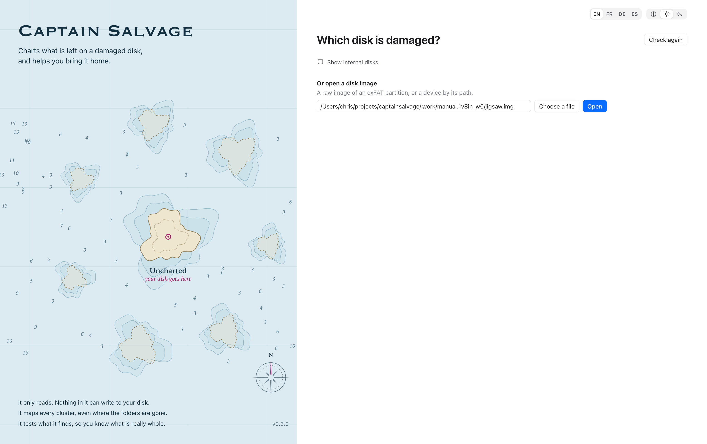
- Chart and remembered volumes
- The left-hand chart summarises what is known about a recognised volume. Before a scan it is uncharted; it is not a live scan-progress map.
- Which disk is damaged?
- Attached volumes appear here with their identifying information and open controls when suitable. Check again refreshes the list; Show internal disks includes internal devices. Choose carefully.
- Mount protection
- A volume's mount-blocking control asks the app to keep that volume unmounted while the app is open. It does not make an already mounted volume read-only. Follow the warnings rather than assuming protection succeeded.
- Seen before, not attached
- These are remembered scan summaries, not currently accessible disks. Reattach the correct source to read its bytes again.
- Or open a disk image
- Use Choose a file or enter an absolute partition-image path, then Open. A device path is also accepted, but requires the correct device identity and permissions.
- Appearance
- Choose system, light, or dark appearance using the top-right controls.
Once open, use the scan control in the toolbar to read and index the source. Its progress shows how far it has read. Scans can stop and resume; a partial scan means the map and file counts are not yet complete. Reopening the same recognised source can reuse its saved workspace rather than starting from nothing.
3. Window layout and modes
The toolbar contains the source and safety status, scan controls, language, appearance, and the Simple / Investigate switch. The left sidebar navigates folders, the centre presents your files or the map's selected bytes, and the right-hand Details panel explains or acts on the selection. Drag panel dividers to adjust their widths. Hover a Details icon to see its tab name.
| Mode | What it shows | When to use it |
|---|---|---|
| Simple (default) | Folders, Overview, Browse files, Inside archive; Selected, Rebuild, Ask agent, Treasure list. | Finding, previewing, organising, and copying files without the technical map and bytes views. |
| Investigate | Everything in Simple, plus map strips, Bytes, extra sidebar views, Workbench, Hypotheses, Lens, Volume, Activity, and Connect. | Explaining missing pieces and testing alternate interpretations. |
The app remembers your mode. Switching modes changes the controls shown, not the source bytes or your existing recovery work. Return to Simple whenever you want the smaller recovery-focused interface.
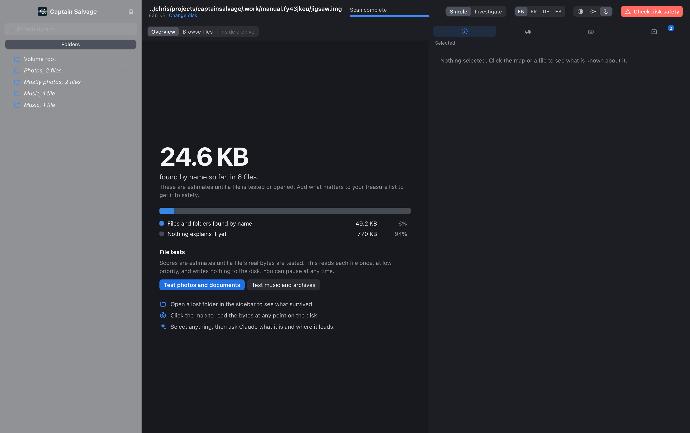
4. Overview
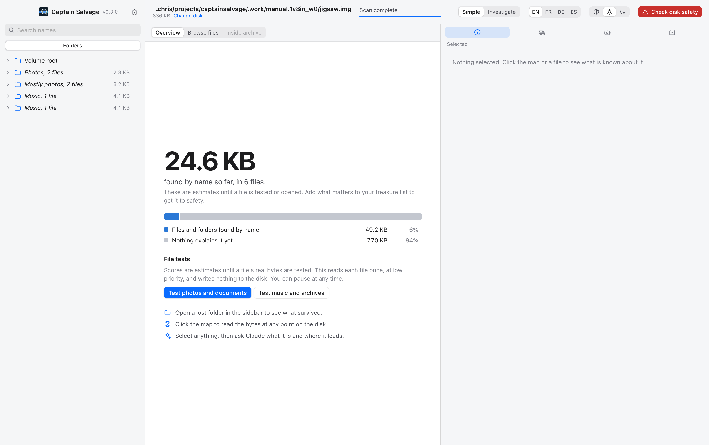
- Found by name
- The headline counts data that found directory entries account for. It is not a promise that every byte is intact or already copied.
- Disk breakdown
- Compare named files and folders, unnamed chains, unexplained space, and current allocation. Unexplained does not mean empty: it means the current map has not accounted for those bytes.
- File tests
- Run tests for the offered file groups and inspect passed, damaged, unsupported, and not-yet-tested counts, including the per-type table. A structure test cannot establish whether the contents are the file you wanted.
- When macOS wrote to this volume
- When evidence exists, a dated table reports system metadata writes and possible overlap with lost files. The safety baseline only detects changes since it was recorded.
Use Browse files or the sidebar to inspect individual results. If a scan is incomplete, let it continue before treating these totals as final.
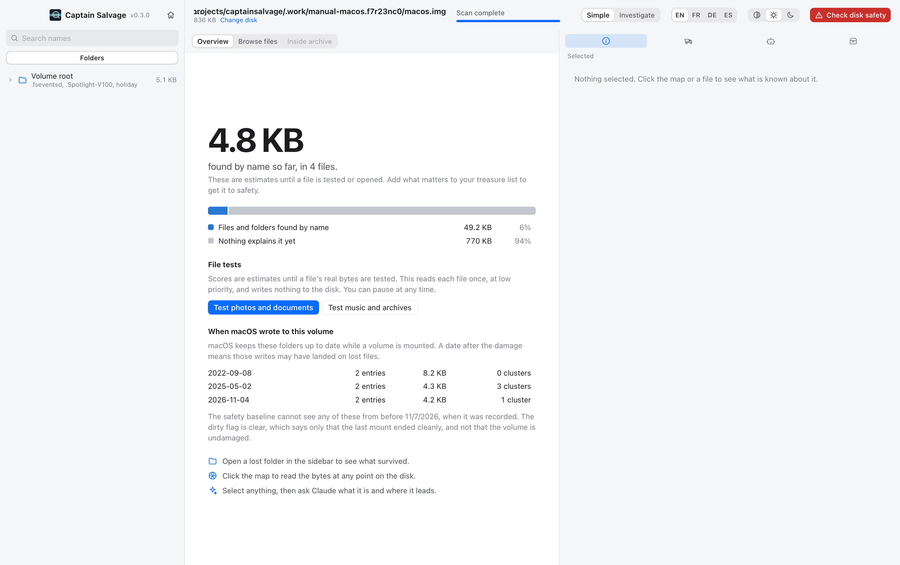
5. Sidebar folders
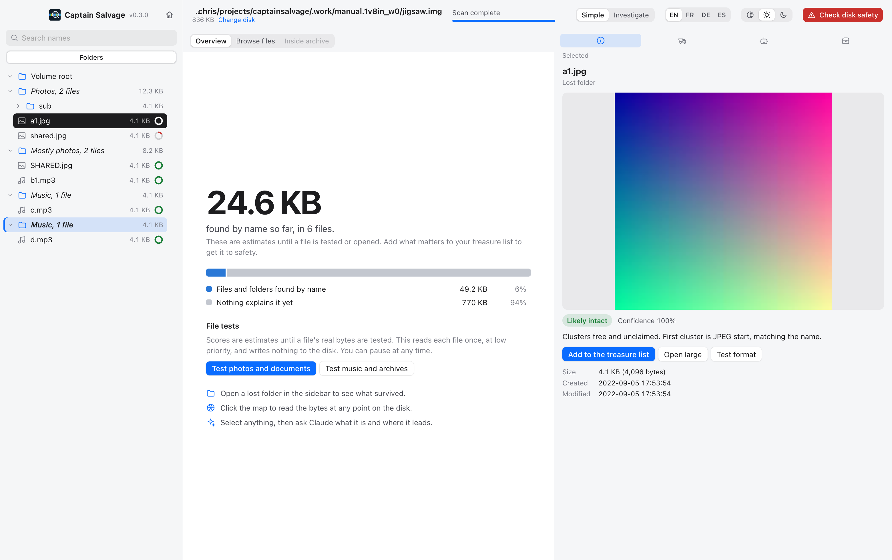
Use the sidebar search to narrow entries. Expand a folder with its disclosure control, then select a file to inspect it. Selecting a folder shows its details; use Browse files there to scope the centre to that folder. Clear the scope in Browse files to return to the whole disk.
A lost-folder label is a placeholder, not the original folder name. In Simple mode these labels avoid raw cluster numbers. Drag a folder piece to Rebuild to arrange a recoverable tree without changing its on-disk parent links.
Investigate adds sidebar views for lower-level evidence, including unnamed chains and unexplained regions. Selecting those takes you to their locations on the map and, where available, their bytes.
6. Browse files: grid and list
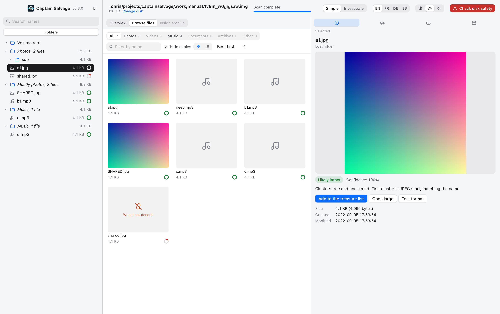
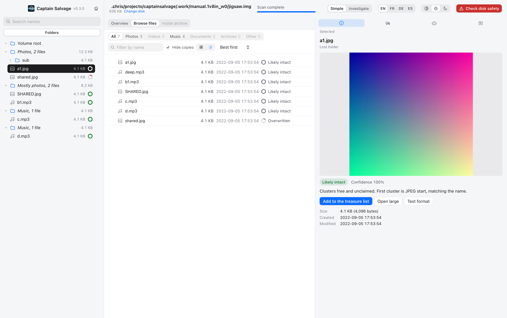
- File-kind tabs
- Limit the view to a kind such as photos, videos, music, documents, or archives. Counts reflect the indexed results.
- Filter by name
- Type a filename or part of one. This filters the current view; it is not a new disk scan.
- Identical-file grouping
- The duplicate toggle shows one representative for already-tested files with identical bytes. It does not delete duplicates. A multiplier marks grouped copies.
- Icons, List, and Sort
- Switch presentation without changing the recovery results. Use the sort menu to order the view by the offered fields.
- File and treasure controls
- Select a tile or row to open it. Its treasure-list control adds or removes it from the copy queue. A confidence ring and verdict describe the app's assessment, not a guarantee.
A missing thumbnail is not automatically lost data. Some types require opening a larger preview, some need a decoder, and a genuinely damaged file may not decode.
7. Selected and file preview
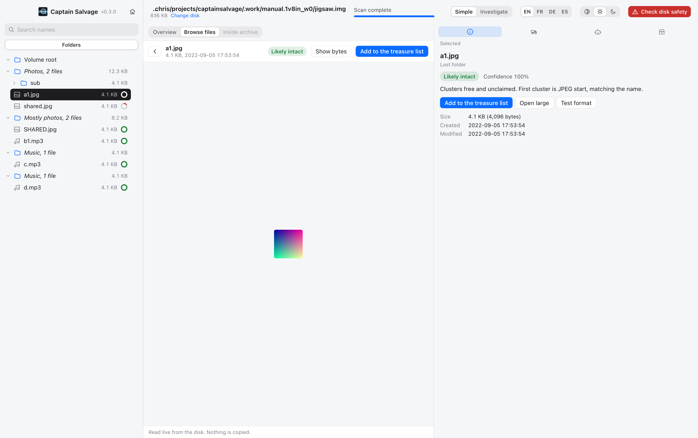
Selected explains the chosen file, folder, or (in Investigate) cluster. It shows the name, path, confidence, reason for the verdict, and facts such as size and timestamps. Folder details offer browsing and adding the folder to the Treasure list. Cluster details identify owners and nearby evidence.
- Open large or the inline preview opens the centre preview. Previous/next controls move through the current file results; the back arrow returns to the files.
- Test format walks a supported file's structure. Read its valid fraction, units, break locations, and notes. An unsupported format is not the same as a failed test.
- Add to the treasure list queues a copy; it does not begin one.
- Look inside opens a supported archive's members.
- Investigate exposes first cluster, pieces, chain layout, current-use and shared-cluster counts, checksum state, and links to the relevant bytes.
Images, supported audio/video, and text can be previewed where the bytes and decoder allow it. Some media types use an optional ffmpeg installation; the app shows instructions if needed. Do not confuse successful playback of a portion with a complete, verified recovery.
8. Inside archive
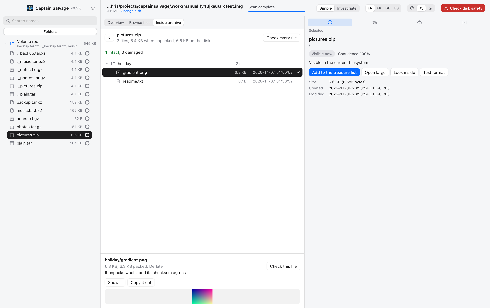
Select an archive and choose Look inside. The Inside archive tab becomes available for that selection. Expand member folders and select a file to see its preview and metadata. Some document formats are archives too.
Use the member-check controls to test contents and inspect each member's mark and explanation: intact, damaged, or unknown. Unsupported compression or a truncated listing can limit what is readable. Folder/member copy controls recover chosen contents to a destination; keep that destination off the source. Return to Browse files to select a different archive.
9. Rebuild: the folder canvas
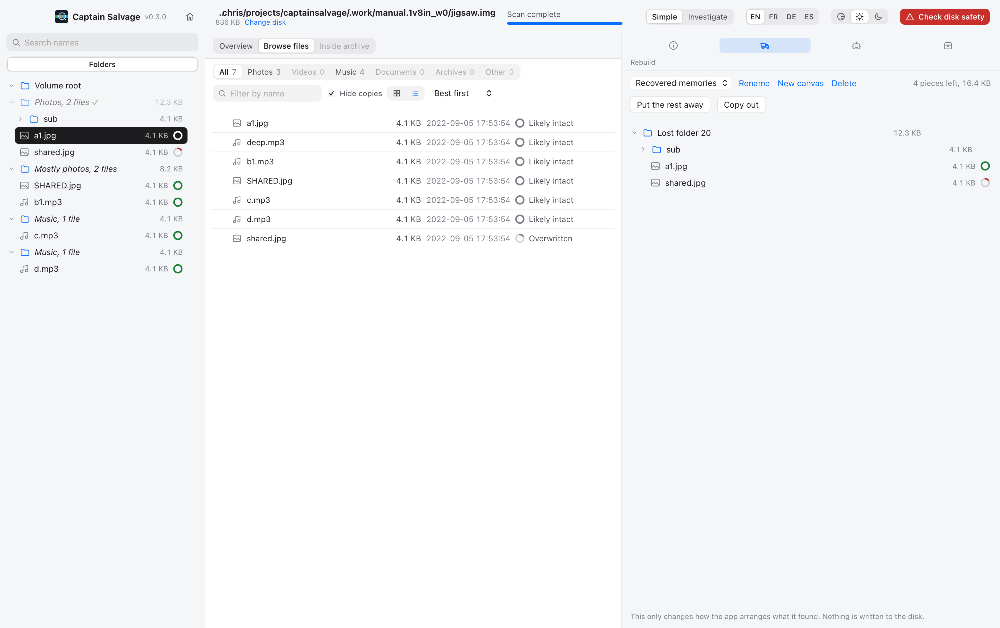
Open Rebuild in Details. Create or select a named canvas, then drag lost folder pieces from the sidebar or files from Browse files into it. The drop choices distinguish placing a piece inside a folder from merging its contents with that folder. Expand the rebuilt tree to check the result.
Use a folder's available rename and organisation controls to describe the intended tree. Suggestions can help relate similar pieces; review them rather than assuming a match proves the original relationship. Removing a canvas item removes that arrangement, not source data.
Use the canvas copy controls to review and copy the rebuilt tree to a healthy destination. Where available, showing a canvas in Finder exposes a read-only view through the running app. Finder still needs the app and source available; the view is not a substitute for an independent recovered copy.
10. Ask agent
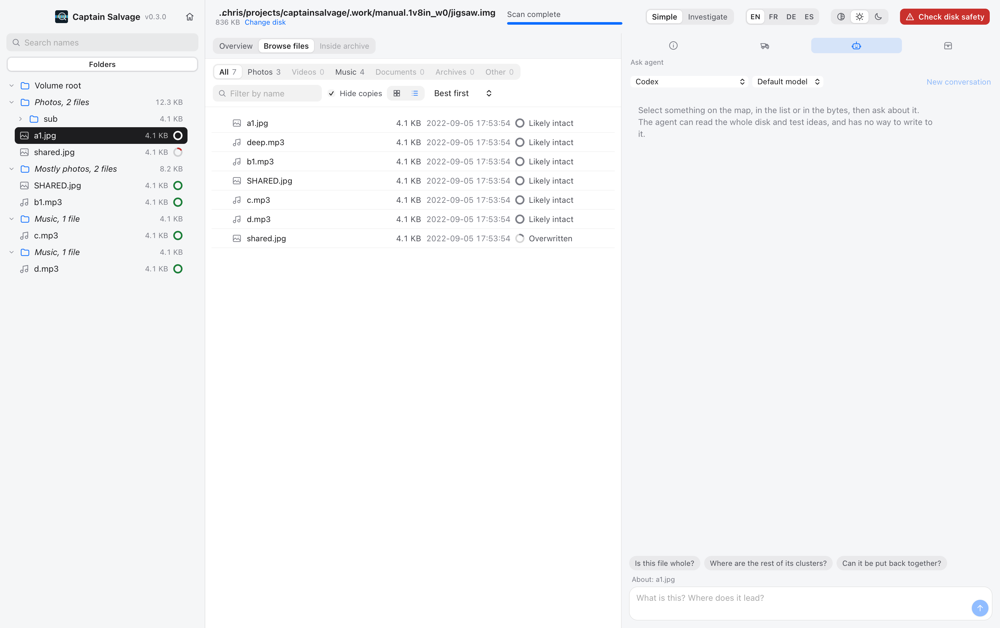
Select a file or region, open Ask agent, choose an available agent, and enter a question. The context area tells you what the agent is being asked about. For example: “Why is this file marked partial?” or “Explain the evidence before proposing a hypothesis.”
The panel shows the conversation and tool activity; use its stop control to interrupt a running request and its reset control when you want a fresh context. Agent availability depends on local configuration and authentication. Review proposed changes in Hypotheses and inspect files yourself. Only you start copying.
An agent may read source bytes and filenames using its tools. Consider your provider's privacy arrangements before using it on sensitive data. Read-only disk access does not mean data stays private from the agent provider.
11. Treasure list and copying
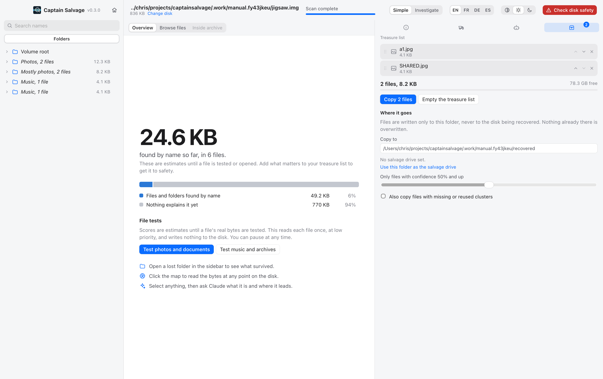
- Add important files or whole folders from Selected or Browse files.
- Open Treasure list. Drag to prioritise items, or use the up and down buttons. Remove an item to change the queue, not the source.
- Set Where it goes to a folder on another healthy disk. Choose a destination or enter a path. You can remember it as the salvage drive.
- Choose the confidence threshold and whether partial files should be included. Review the plan's file count, byte count, free space, and any refusal.
- Start copying only after checking that plan. Watch progress and use Stop copying if necessary. Completed copies remain available.
- Open the copy report and verify the output before relying on it.
The app refuses an unsafe source destination and reports insufficient space. Changing thresholds changes what qualifies for the copy; it does not improve the bytes. Emptying the Treasure list clears the queue, not the recovered files.
12. Copy report
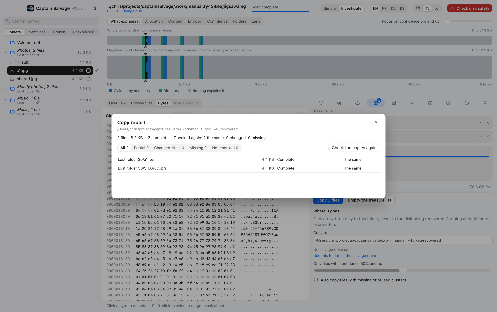
Choose Open the copy report after a copy. The report identifies the destination and summarises complete and partial output. Each row shows the relative target path, bytes written, copy status, and verification state.
- All / Partial / Changed since / Missing / Not checked
- Filter the manifest without changing files. Use Show more if further rows are available.
- Check the copies again
- Reread destination files and compare their hashes with the hashes recorded when copied. This reads the copies, not the damaged disk.
- The same
- The destination bytes still match what was copied. This does not prove the original file was undamaged or that the recovery interpretation was right.
- Changed since / Missing
- The output no longer matches or cannot be found. Check the destination and preserve any valuable copies before investigating further.
13. Investigate: map strips
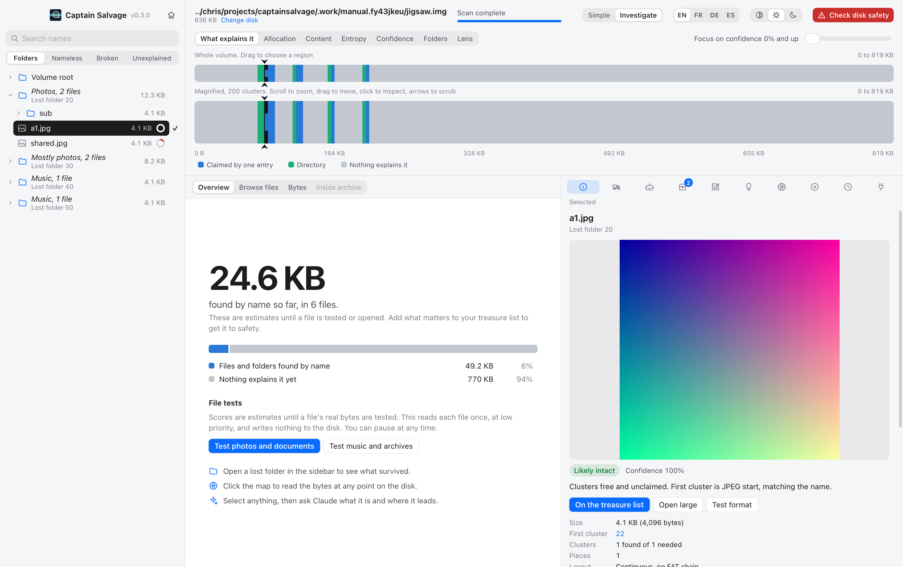
Switch to Investigate. The map shows the whole-volume context and a closer view of the chosen range. Select a point to inspect a cluster; drag a range to zoom. Use the map's zoom/navigation controls and gestures to return to context or move through neighbouring bytes. Hover for the location and the mix represented by that column; a column can contain several categories.
- What explains it
- Named entries, directories, unnamed chains, and unaccounted regions in the current interpretation.
- Allocation
- What the allocation bitmap and FAT say is in use or free, including free areas with a remaining chain.
- Content and Entropy
- What scanned bytes resemble, and how random they appear. High entropy alone cannot distinguish compressed, encrypted, or useful data.
- Confidence and Folders
- The strongest claiming-file score, or where directory clusters were found.
- Lens and legend
- The active filter's matching clusters. Use legend items to isolate a category and read the labels rather than relying only on colour.
The confidence floor changes the interpretation shown. Selection markers and highlighted extents connect a file or region with its location on the map.
14. Bytes
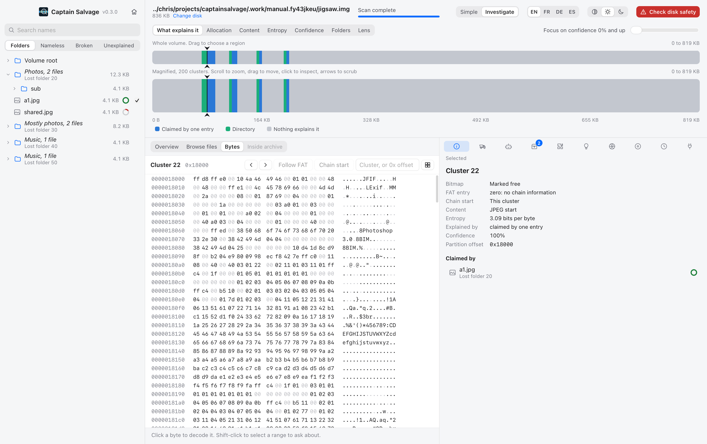
Select a cluster on the map or follow a cluster link in Selected, then choose Bytes. This tab is disabled until a cluster is selected. The centre shows byte offsets, hexadecimal values, and a readable-character column.
Use previous/next-cluster controls to move through the source. Compare a file's extents and expected signature with the bytes actually present. Non-text bytes are normal in media; readable strings alone do not establish file boundaries. This is an inspection view, not a hex editor.
15. Workbench
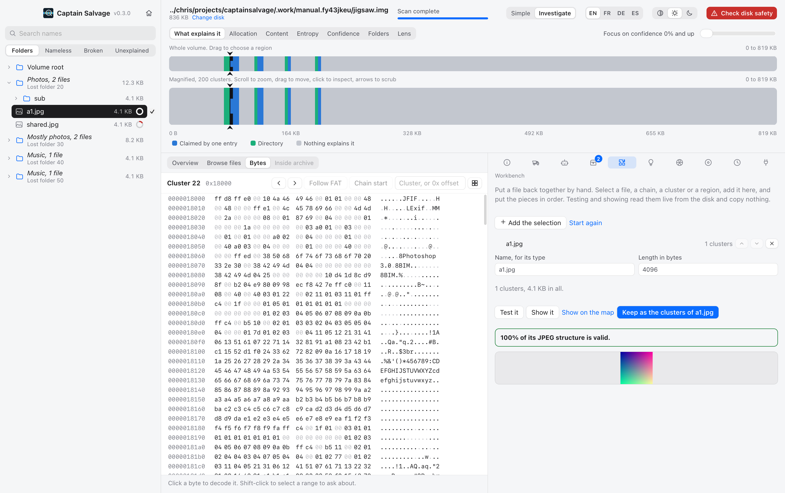
- Select a file, cluster, or supported region and open Workbench.
- Choose Add the selection. Repeat for additional pieces.
- Move pieces up or down to control byte order; remove pieces that do not belong. Review the output name and length fields.
- Use Test it for a structure test and Show it for a preview. Neither action writes a reconstructed file over the source.
- If the interpretation is useful, Keep as the clusters of records a file-extents hypothesis. Review it in Hypotheses and copy through the recovery workflow when ready.
Passing a test is evidence, not proof that a reconstructed file has the right content. Keep your original scan and compare alternate interpretations.
16. Hypotheses
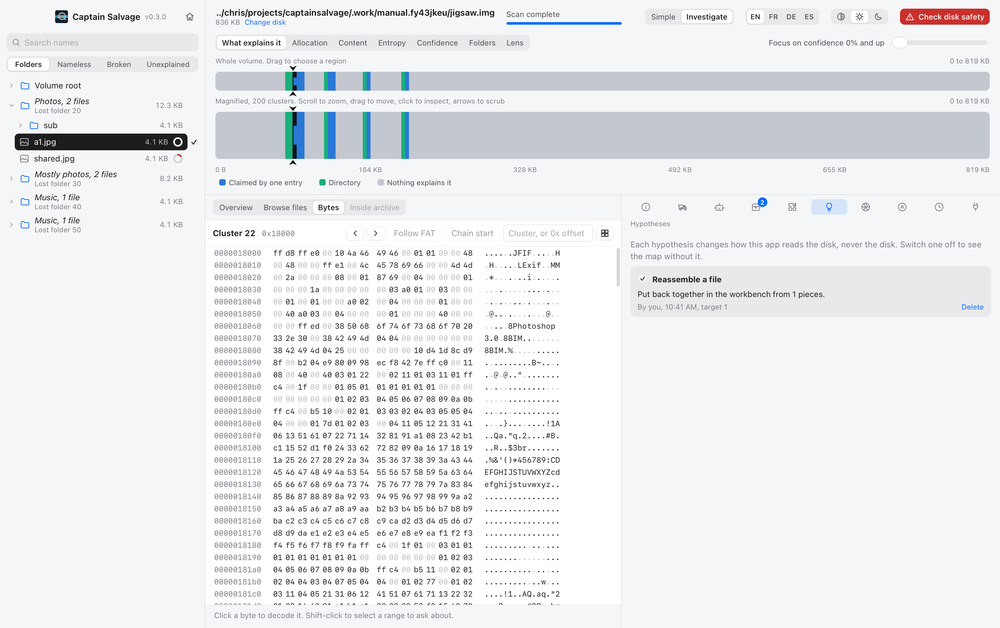
This tab lists saved overlays, with their kind, explanatory note, author, time, and target. They can describe file extents, a folder parent, a directory piece, an accepted damaged entry, a region explanation, or a note.
Toggle the checkbox to activate or deactivate an interpretation. The app rebuilds its view from the applicable evidence. Delete removes the saved hypothesis, not disk contents; deactivate first if you may want to compare later. Saved lenses have their own tab rather than appearing in this list.
17. Lens
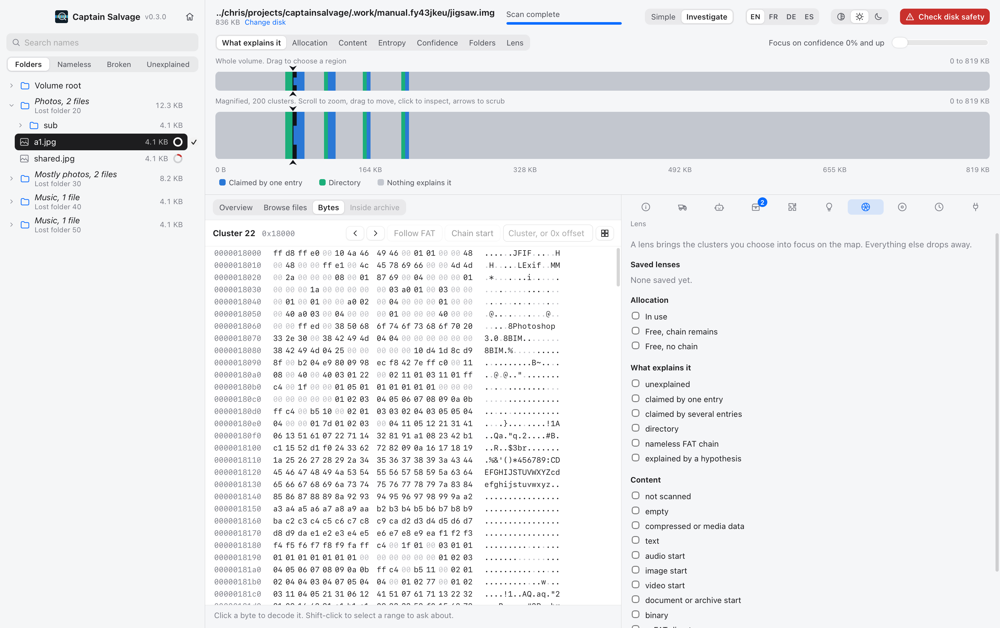
Choose the allocation, ownership (“What explains it”), and content categories of interest. The Lens map layer highlights matches while other clusters fall away. Use it to ask questions such as where free, unexplained picture-like bytes lie.
Enter a descriptive name and choose Save lens to reuse the filter. Select a saved lens to apply it; Clear removes the active filter. A lens does not repair a file or change the allocation bitmap.
18. Volume
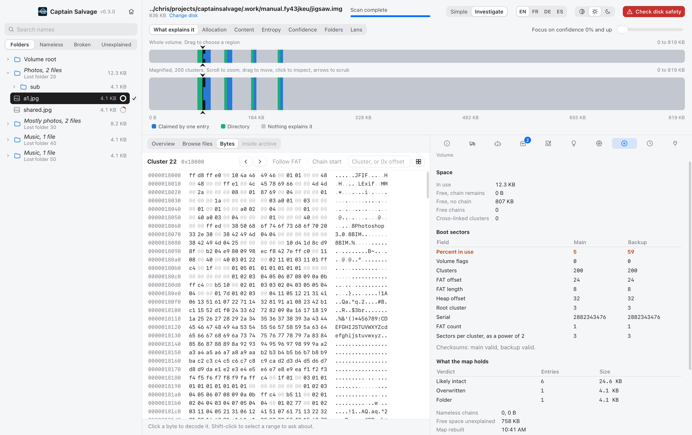
- Space
- Summaries of allocation, remaining free chains, and cross-links.
- Boot sectors
- Main and backup geometry values, highlighted differences, and checksum validity. Disagreement is evidence to examine, not a request to overwrite either copy.
- What the map holds
- Verdict counts, sizes, unnamed chains, unexplained space, and when the interpretation was rebuilt.
- Rebuild the map now
- Recalculate the map from known evidence and active hypotheses. This is not a filesystem repair or a replacement for scanning unread bytes.
- Check disk is unchanged
- Compare boot regions, FAT, bitmap, and root with the safety baseline. A match does not establish that every data cluster is unchanged.
- How damage is weighed
- Controls for chain fallback, damaged-entry handling, and confidence affect interpretation. Record deliberate changes and review the new results; changing assumptions does not restore overwritten bytes.
19. Activity
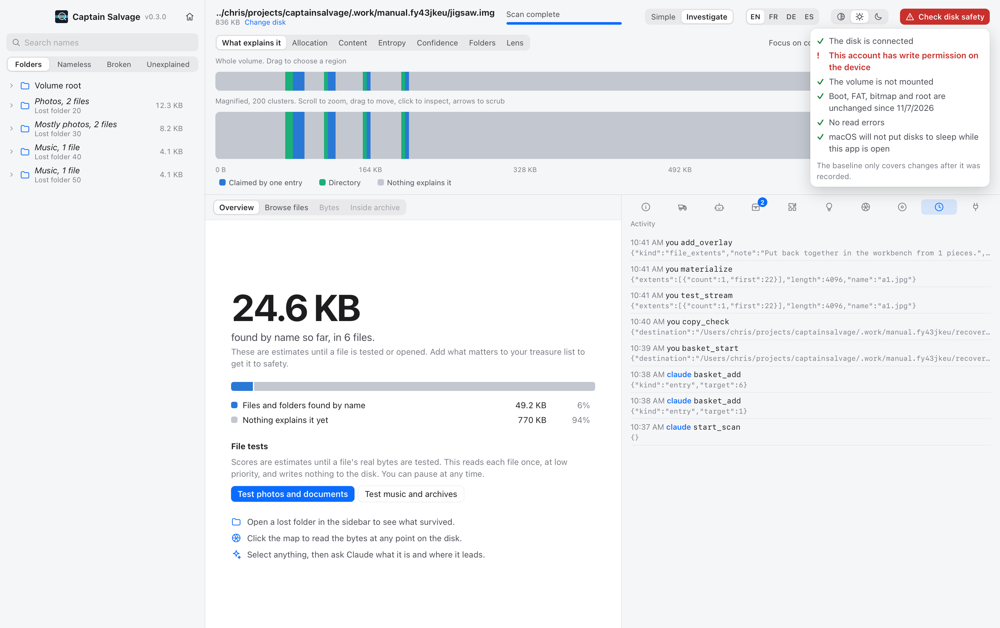
Read the timestamped actions to understand scans, tests, hypotheses, and copy operations. This is a history view, not a queue of commands to run again. Pair it with the copy report when checking what was actually written to a destination.
20. Connect
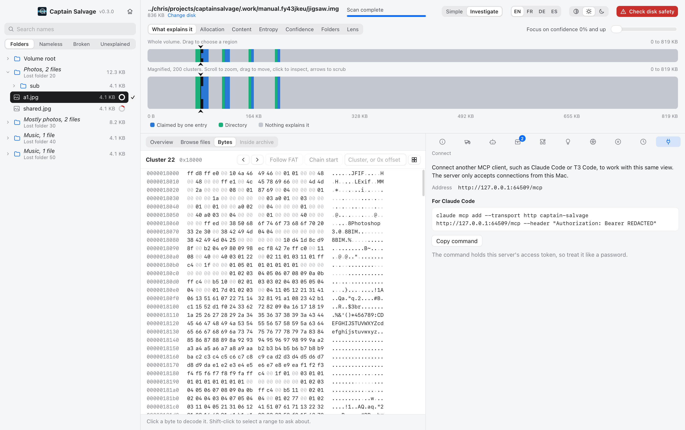
Connect shows the app's local MCP server address and a command for adding it to Claude Code. Use Copy command and follow your client's setup instructions. Other compatible clients, including T3 Code, can use the same local server with its required authorization header.
The server accepts connections from this Mac and works with the same open source and selection. A connected client can inspect data and propose overlays; it is not a separate recovery session. Keep the app open while using it.
The command contains a bearer token. Treat it like a password: do not publish it in screenshots, logs, issues, or messages. A local address does not prevent an authorised external agent from sending inspected data to its provider.
21. If something does not work
- The disk is not listed
- Check the connection, refresh the start screen, and use Show internal disks only if appropriate. Do not guess a device path. For an image, verify it is a raw exFAT partition image.
- Permission denied
- Follow the app's disk-access instructions. Do not bypass a safety refusal by selecting a different path to the same source.
- A disk disconnects
- Stop and address the hardware connection. Do not interpret every subsequent preview error as file damage.
- Few files or empty categories
- Check scan progress, filename filters, selected kind, folder scope, and confidence settings before assuming nothing remains.
- A preview or archive member fails
- Read the error and run an appropriate format test. Unsupported encoding, absent optional decoders, incomplete extents, and overwritten data are different causes.
- Copy is disabled or refused
- Review the destination, free space, confidence threshold, partial-file setting, and whether any files qualify.
- You cannot find a technical tab
- Switch to Investigate. Bytes also needs a selected cluster; Inside archive needs a chosen archive.